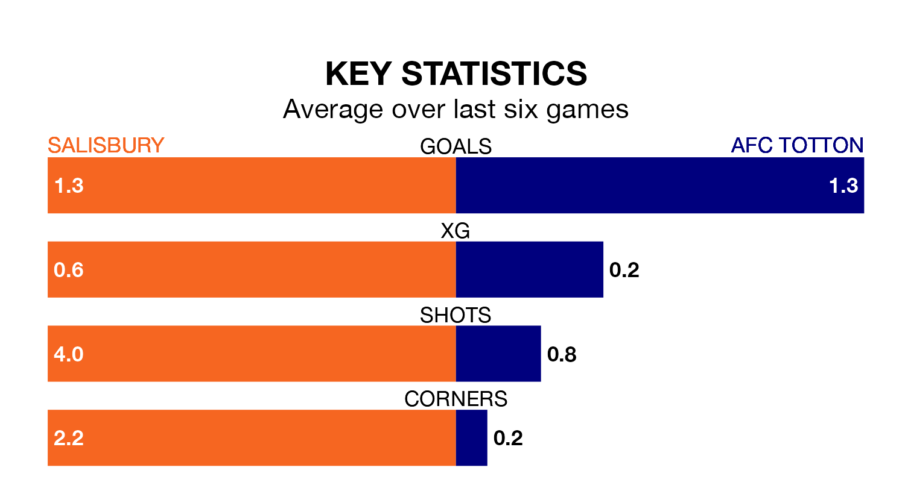

Two of Southern League Premier South's meanest defences go head-to-head at the Raymond McEnhill Stadium on Saturday, when Salisbury host AFC Totton.
Only one side – Gosport Borough – has conceded fewer goals than Salisbury to date: the home side have let in just 26 goals in 24 games.
Totton have conceded 29 goals in 22 games, giving them the joint-third tightest back line so far this season.
Salisbury are second in the table after 24 games, of which they have won 15 and drawn five, earning 50 points.
Totton are four places behind the hosts in sixth, with 10 wins and seven draws putting them on 37 points.
Salisbury are in mixed form in Southern League Premier South, with two wins and two draws from their last six games.
With a win and four draws over that period, the away team's form is slightly worse – they have taken seven points from 18, compared to Salisbury's eight.
Salisbury's last match was on January 6, a 4-2 win against Tiverton Town.
Totton lost 3-1 against Sholing last time out, also on January 6.
Updated: 15:34, 08/01/24